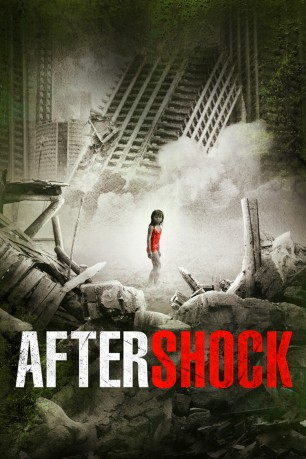

#3258 Aftershock
 
 IMDB-Wertung: 7.6 / 10
IMDB-Wertung: 7.6 / 10  Metascore: 0
Metascore: 0 
Im Jahr 1976 erschüttert ein schweres Erdbeben die Region Tangshan und trennt die Schicksale der beiden bis dato unzertrennlichen Geschwister Fang Da und Fang Deng. Während Fang Da, der bei dem Unglück einen Arm verlor, mit der traumatisierten Mutter in eine andere Stadt zieht und die Schwester für tot hält, wird Fang Deng von einem freundlichen Rotarmistenpärchen adoptiert und wächst zu einer schönen, wenngleich verschlossenen jungen Frau heran. 2008 kommt es anlässlich des Erdbebens von Sichuan zum überraschenden Wiedersehen.
Jahr: 2010
Dauer: 135 Minuten
FSK: 16
Land: China Studio: Koch MediaTonspuren:
Untertitel: Deutsch,
Auflösung: 1080p (1920x816) Größe: 6922 MB
Genre: Drama
Regisseur: Xiaogang Feng
Drehbuch: Wu Si, Ling Zhang
Soundtrack: Liguang Wang
Darsteller:
- Fan Xu als Li Yuanni
 Jingchu Zhang als Fang Deng / Wang Deng
Jingchu Zhang als Fang Deng / Wang Deng- Daoming Chen als Wang Deqing, Deng's Foster Father
- Chen Li als Fang Da
- Zi-feng Zhang als Young Fang Deng
- Jiajun Zhang als Young Fang Da
- Yi Lu als Yang Zhi
- Guoqiang Zhang als Fang Daqiang
- Ziwen Wang als Xiao He
- Lixin Yang als Lao Niu
 Zhong Lü als Grandmother
Zhong Lü als Grandmother- Mei Yong als Aunt
- Li-Li Liu als Sichuan Mother
- Jin Chen als Dong Guilan, Deng's Foster Mother
- Baowen Zhang als Wang Zhiguo's Wife
- Qiuzi Ma als Director Zhao
- Jing Lü als Woman Teacher
- David F. Morris als Alexander
- Tie-Dan als
Datei: X:\HD-Eastern-Modern(A-M)\Aftershock (2010, FSK16, 1920x816).mkv seit 24.02.2016
Festplatte: HD Eastern+Western
 Es gibt insgesamt 104 Filme in der Gruppe 'HD-Eastern-Modern(A-M)'
Es gibt insgesamt 104 Filme in der Gruppe 'HD-Eastern-Modern(A-M)'